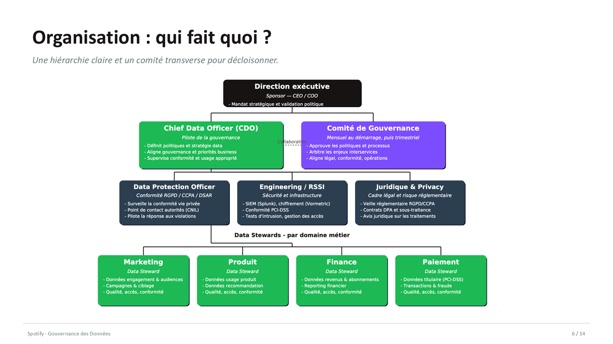
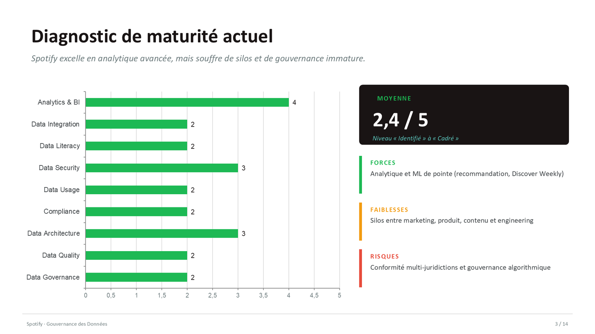
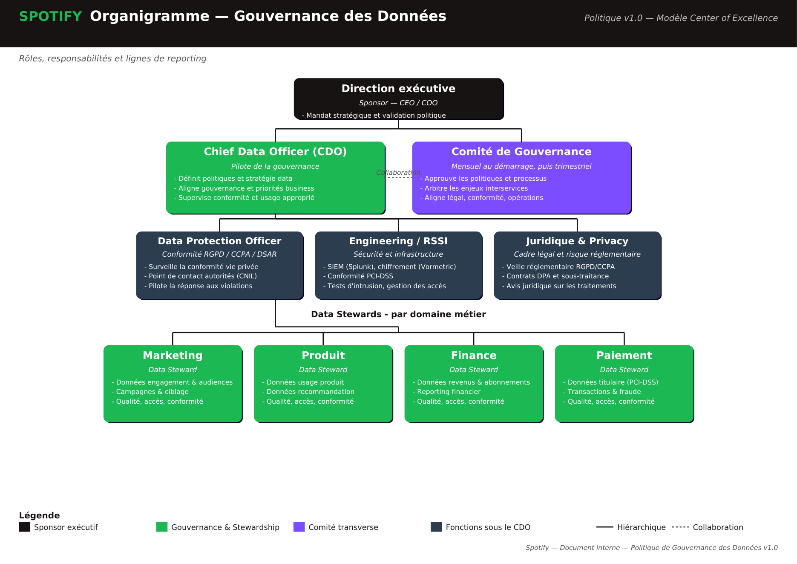
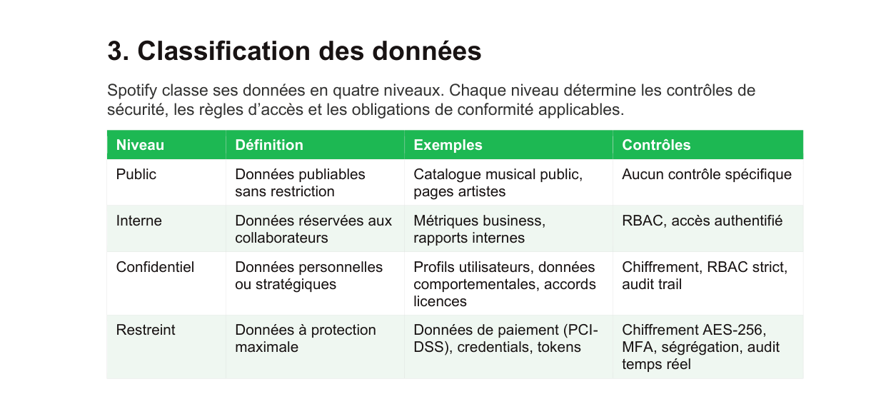
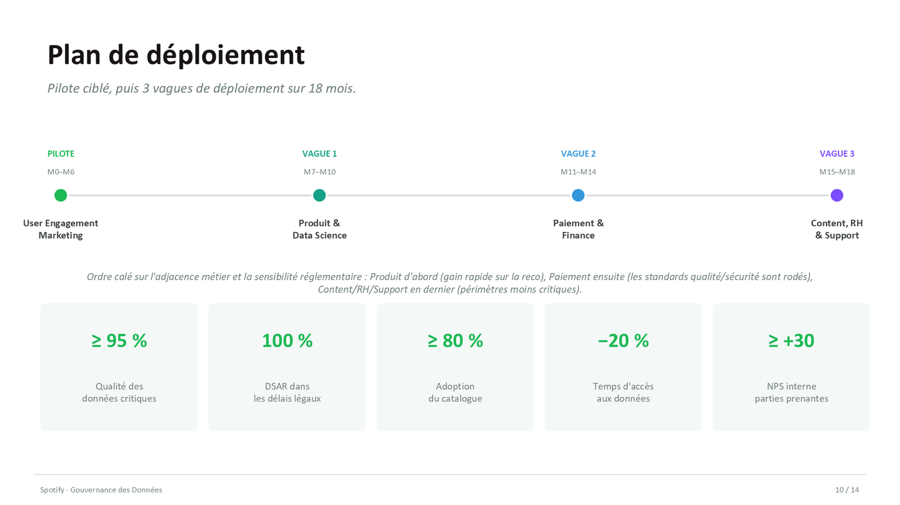
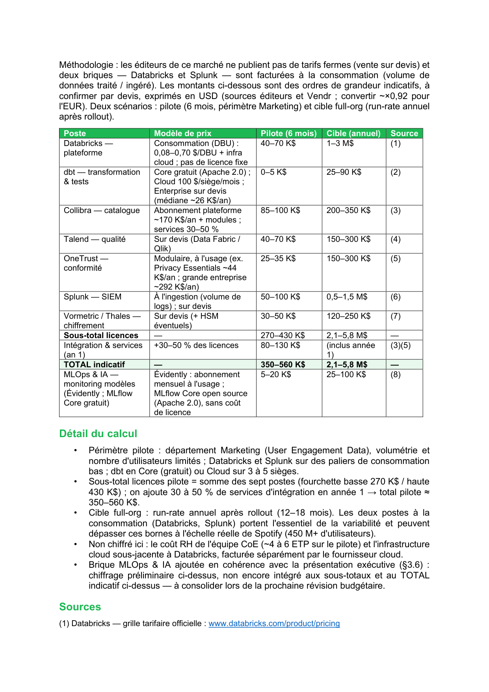
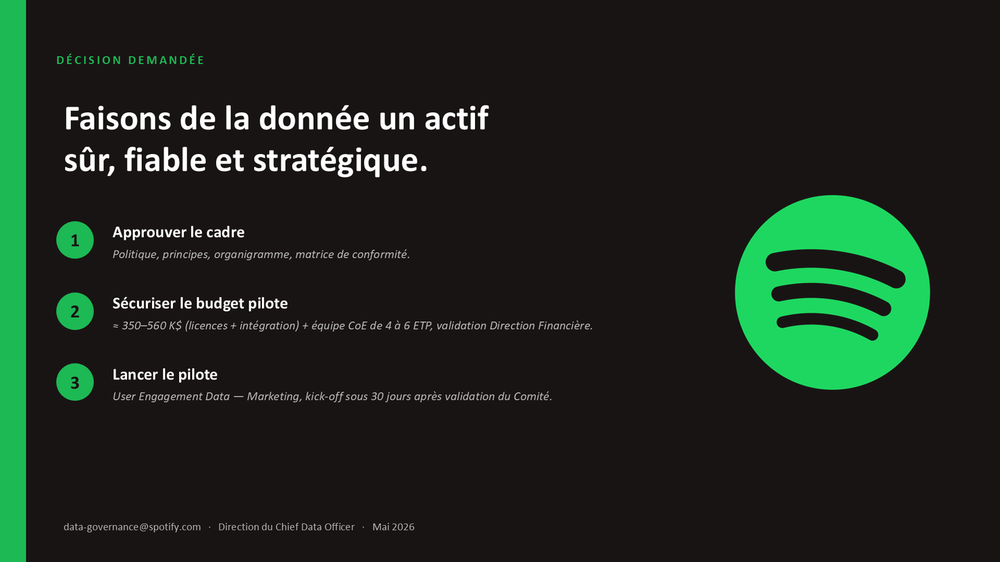
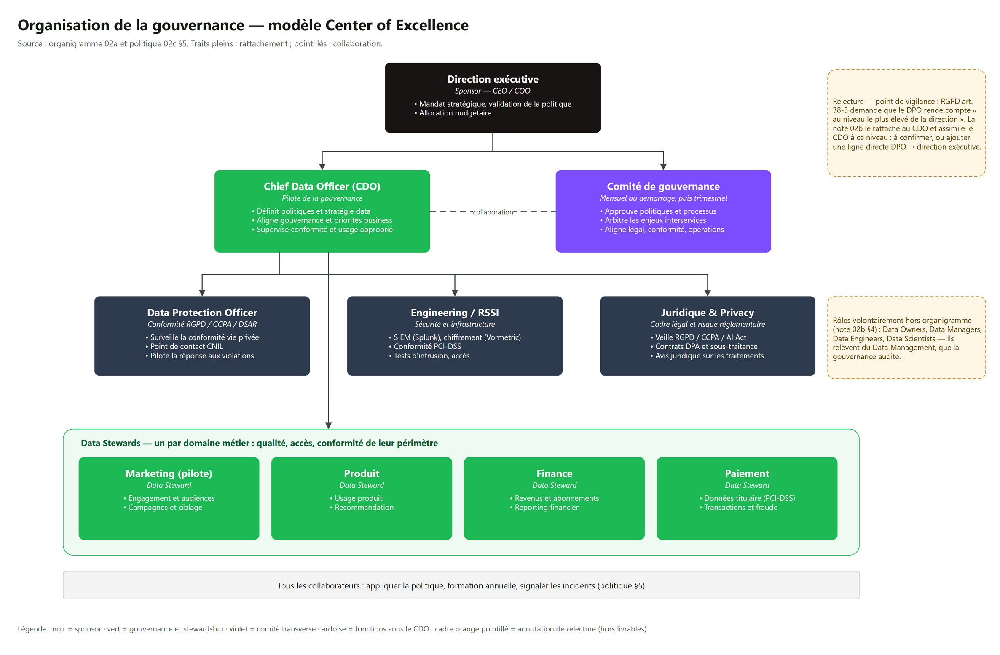
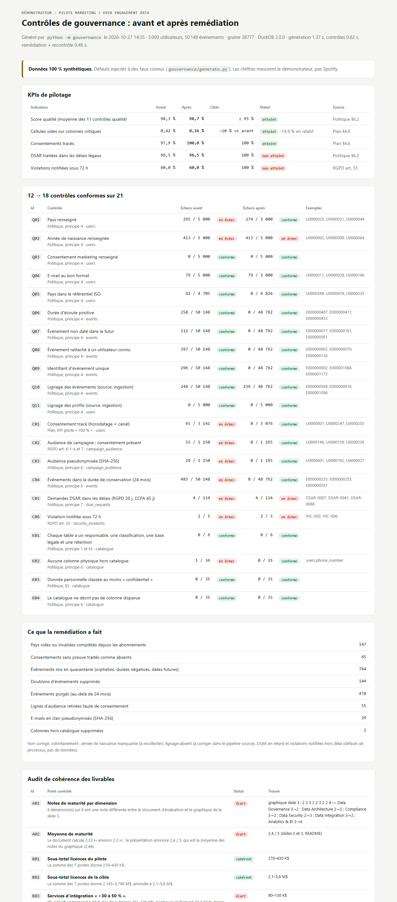

Extraction des six livrables
Texte, tableaux et notes des fichiers Word, PowerPoint et PDF lus avec python-docx, python-pptx et PyMuPDF, puis comparés à la fiche du portfolio.
Cas d'étude Spotify (450 M d'utilisateurs, 180 pays) : un Chief Data Officer présente au comité exécutif un diagnostic de maturité, une organisation, une politique, un plan de déploiement chiffré. Ce dépôt ajoute ce qu'un comité ne voit pas d'habitude : les règles de la politique exécutées en SQL sur un jeu de données d'exemple, et un audit chiffré des livrables eux-mêmes.

Vidéo générée par scripts/promo_video.py à partir des vraies pages des livrables et du rapport : narration de synthèse, fond sonore synthétisé.
Cas d'étude pédagogique fondé sur un business case fourni par la formation : les chiffres de Spotify sont ceux du cas, pas d'une mission réelle.
Ces images sont exportées des fichiers du dépôt par PowerPoint et Word, sans retouche. Elles montrent ce que le comité exécutif aurait sous les yeux.






01_Evaluation_Maturite_Data.docx02a_Organigramme_Gouvernance.pdf · 02b_Note_Argumentation_Organigramme.docx02c_Politique_Gouvernance_Donnees.docx03_Plan_Implementation_Gouvernance.docx04_Presentation_Comite_Executif.pptxQuatre pages draw.io générées par scripts/build_drawio.py à partir du contenu des livrables. Les cadres orange en pointillé sont des annotations de relecture, absentes des livrables.

Source éditable : docs/architecture.drawio.
Le pilote prévoit un audit qualité à M1, un audit RGPD à M2 et une mesure des KPIs à M6. Le démonstrateur rejoue cette boucle en deux secondes, sur des données 100 % synthétiques (5 000 utilisateurs, 50 148 événements, e-mails en @example.com), dans lesquelles 13 types de défauts ont été injectés à des taux connus.
11 contrôles qualité sur les 4 dimensions de la politique (complétude, exactitude, cohérence, traçabilité), 6 contrôles RGPD / CCPA, 4 contrôles du catalogue.
catalog.toml joue le rôle de Collibra : steward, classification, base légale, rétention. Une colonne téléphone absente du catalogue est détectée.
147 pays complétés depuis les abonnements, 764 événements en quarantaine, 144 doublons, 478 événements purgés au-delà de 24 mois, 29 e-mails pseudonymisés.
Année de naissance manquante, DSAR en retard, violations notifiées hors délai : ce sont des défauts de collecte ou de processus. Le code refuse de les « corriger ».
| KPI (source) | Avant | Après | Cible | Statut |
|---|---|---|---|---|
| Score qualité, moyenne des 11 contrôles (politique §6.2) | 98,3 % | 98,7 % | ≥ 95 % | atteint |
| Cellules vides sur les colonnes critiques (plan §4.6) | 0,42 % | 0,36 % | −10 % | −14,9 % |
| Consentements tracés (plan §4.6) | 97,9 % | 100,0 % | 100 % | atteint |
| DSAR traitées dans les délais légaux (politique §6.2) | 96,5 % | 96,5 % | 100 % | non atteint |
| Violations notifiées sous 72 h (RGPD art. 33) | 60,0 % | 60,0 % | 100 % | non atteint |
Ces chiffres mesurent le démonstrateur, pas Spotify : ils dépendent des taux de défauts choisis dans gouvernance/generate.py. Ce qu'ils prouvent : chaque règle est vérifiable, chaque correction est comptée, et ce qui ne se corrige pas par la donnée reste visible. Un consentement sans horodatage est traité comme absent (65 cas) : la charge de la preuve pèse sur l'entreprise (RGPD art. 7-1).

python -m gouvernance (version HTML, JSON). Mesuré sur cette machine (Ryzen 9 3900X) : 0,8 s pour les 21 contrôles, 0,5 s pour remédier et recontrôler. À 50 000 utilisateurs et 501 513 événements : 1,4 s de contrôles, 1,4 s de remédiation et recontrôle.# Un contrôle = une requête qui compte les lignes en échec (convention des tests dbt)
Check("C02", "conformite", "consentement",
"Audience de campagne : consentement présent", "RGPD art. 6-1-a et 7",
"campaign_audience",
"user_id NOT IN (SELECT user_id FROM {s}.users WHERE consent_marketing = 'true' "
"AND NOT (consent_ts vide))", threshold=1.0)gouvernance/audit_livrables.py ouvre les fichiers Word et PowerPoint en lecture seule, extrait les notes, le graphique, le tableau budgétaire et les décomptes, puis recalcule. Résultat : 7 points cohérents, 5 à signaler.
| Point | Constat | Statut |
|---|---|---|
| Notes de maturité | 6 dimensions sur 9 ont une note différente entre le document d'évaluation et le graphique de la slide 3. Exemples : gouvernance 3 → 2, conformité 3 → 2, Analytics & BI 2 → 4. | écart |
| Moyenne de maturité | Le document calcule 21 / 9 = 2,33 (« environ 2,3 ») ; la présentation et le README annoncent 2,4, qui est la moyenne du graphique (22 / 9 = 2,44). | écart |
| Intégration « +30 à 50 % » | La ligne 80–130 K$ applique 30 % aux deux bornes. Avec 30 à 50 %, on obtient 81–215 K$, donc un pilote à 351–645 K$ au lieu de 350–560 K$. | écart |
| « 14 contrôles de conformité » (slide 5) | Aucune liste de 14 contrôles ni matrice de conformité (citée slide 14) dans le dépôt. La section 4 de la politique compte 13 rubriques. | non traçable |
| Calendrier | Le plan finit à M18, la politique à M24 ; la bascule vers le Center of Excellence est en phase 2 (7 à 12 mois) dans la politique, à M12 dans les slides. | à harmoniser |
| Sous-totaux licences, total pilote, 9 principes, 4 niveaux, 7 KPIs, 14 slides | Recalculés ou recomptés : conformes à ce qu'annonce la présentation (270–430 K$ ; 2,145–5,790 M$ arrondi à 2,1–5,8 M$). | cohérent |
DPO. La note 02b rattache le DPO au CDO et cite l'article 38 du RGPD, qui demande que le DPO rende compte au niveau le plus élevé de la direction. Assimiler le CDO à ce niveau se discute ; une ligne directe DPO → direction exécutive lèverait le doute.
Délais. La politique écrit « incidents traités sous 72 heures » ; le RGPD impose une notification à l'autorité sous 72 h, pas un traitement. Le délai DSAR RGPD est d'un mois (prolongeable), noté « 30 jours ».
ROI « > 3× » (slide 12) : aucun calcul ne l'accompagne dans le dépôt.
Il ne juge pas la pertinence des recommandations ni l'exactitude des prix éditeurs (sources externes, non revérifiées ici). Il ne modifie pas les livrables : ce sont les versions remises au jury, laissées intactes.
Le livrable est un dossier de conseil, et le démonstrateur est un traitement par lots de deux secondes, sans service, sans état ni utilisateur concurrent. Un conteneur ou un manifeste Kubernetes n'apporterait aucune preuve supplémentaire : il ajouterait de la surface à maintenir.
Dans la cible, ces contrôles tourneraient comme des tests dbt planifiés dans Databricks (Workflows), à côté du pipeline qu'ils surveillent, et leurs résultats remonteraient dans Collibra. C'est une recommandation d'architecture, non mise en œuvre.
Texte, tableaux et notes des fichiers Word, PowerPoint et PDF lus avec python-docx, python-pptx et PyMuPDF, puis comparés à la fiche du portfolio.
En lisant les données du graphique de la slide 3 (et de la version V4 archivée), 6 notes sur 9 diffèrent du document d'évaluation. La moyenne 2,4 annoncée vient du graphique, pas de l'analyse écrite (2,3).
Slides exportées par PowerPoint, documents convertis en PDF par Word puis rendus en PNG. Aucun fichier source modifié.
Catalogue TOML, générateur synthétique, 21 contrôles DuckDB, remédiation avant / après, rapport HTML. 40 tests pytest verts.
Deux demandes « en retard » du générateur avaient une date de clôture future : elles apparaissaient comme en cours. Le générateur fixe maintenant leur réception dans le passé ; un test vérifie les 4 cas.
En recalculant l'annexe budgétaire, la ligne « +30 à 50 % » s'avère calculée à 30 % sur les deux bornes. Le haut de fourchette du pilote est sous-estimé de 85 K$.
Quatre pages draw.io vérifiées à l'export PNG, cette page, une vidéo narrée générée par script.
| Sujet | État |
|---|---|
| Recommandations (organisation, outils, budget) | Cas d'étude de certification : non mises en œuvre. Prix éditeurs repris des sources citées, non revérifiés. |
| Démonstrateur | Données synthétiques ; DuckDB et des requêtes « à la dbt » simulent Databricks, dbt/Talend et Collibra. Aucun de ces outils n'est déployé. |
| Score qualité | Moyenne des taux de réussite : il reste à 98 % même quand un contrôle (année de naissance) est à 91,7 %. Le détail par contrôle est la vraie lecture. |
| Livrables | Écarts signalés, pas corrigés dans les fichiers remis au jury. |
git clone https://github.com/PDUCLOS/BLOC1-SPOTIFY.git && cd BLOC1-SPOTIFY python -m pip install -r requirements.txt python -m gouvernance # écrit docs/demo/rapport.html et rapport.json python -m gouvernance --users 50000 # ~500 000 événements python -m pytest # 40 tests python scripts/build_drawio.py # régénère les schémas (draw.io requis pour les PNG)